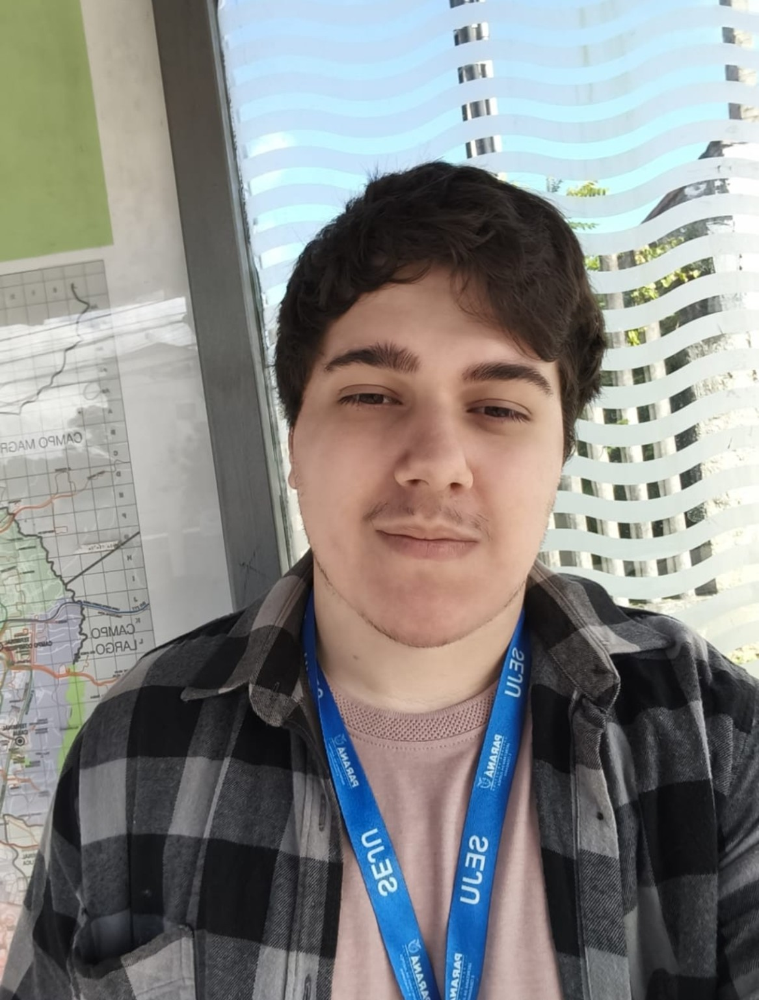

Tecnologia da Informação · SEJU
Ingresso na UTEC como estagiário em maio de 2026 e atuação como profissional terceirizado a partir de setembro. Suporte, infraestrutura e desenvolvimento de soluções internas.
 RODRIGO BENATOTECNOLOGIA & ENGENHARIA
RODRIGO BENATOTECNOLOGIA & ENGENHARIAPORTFÓLIO PESSOAL / RODRIGO BENATO
Transformo necessidades reais em sistemas que simplificam o trabalho — da organização de processos à inteligência artificial.
Conheça meus projetos ↗DESENVOLVIMENTO · DADOS · AUTOMAÇÃO

01 / SOBRE MIM
Sou Rodrigo Benato Souto dos Santos, estudante de Engenharia de Controle e Automação na UTFPR e de Análise e Desenvolvimento de Sistemas na Opet.
Atuo com tecnologia na Secretaria da Justiça e Cidadania do Paraná, na UTEC. Meu trabalho conecta desenvolvimento de sistemas, suporte técnico e organização de processos. Gosto de entender onde a rotina trava e construir uma solução que faça diferença.
02 / TRABALHOS EM DESTAQUE
03 / TRAJETÓRIA
Ingresso na UTEC como estagiário em maio de 2026 e atuação como profissional terceirizado a partir de setembro. Suporte, infraestrutura e desenvolvimento de soluções internas.
Minha primeira experiência profissional: gerenciei contas, estoque, custos, atendimento ao cliente e a operação de um food truck de frutos do mar, enquanto minha mãe cuidava da cozinha.
UTFPR · 6º período
Opet · 2º período
BOAS SOLUÇÕES COMEÇAM COM UMA CONVERSA